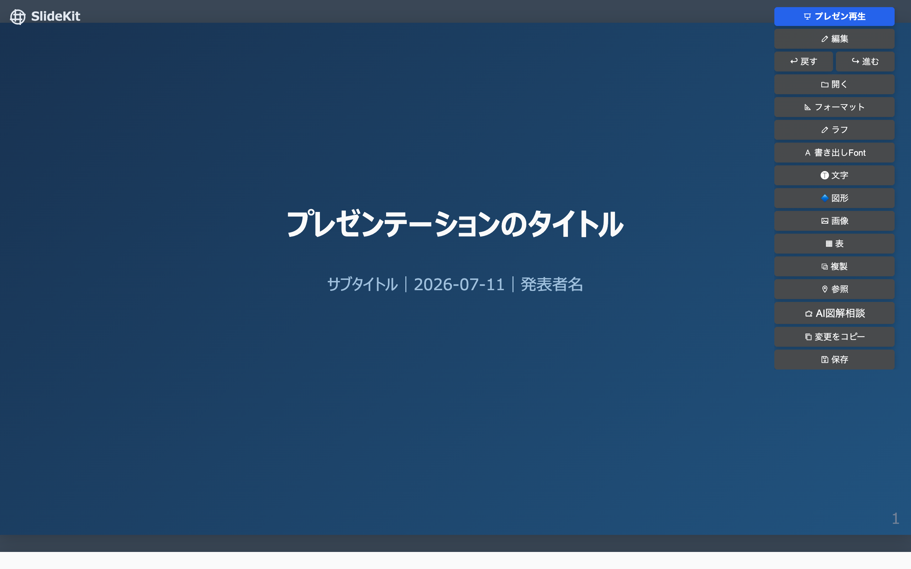
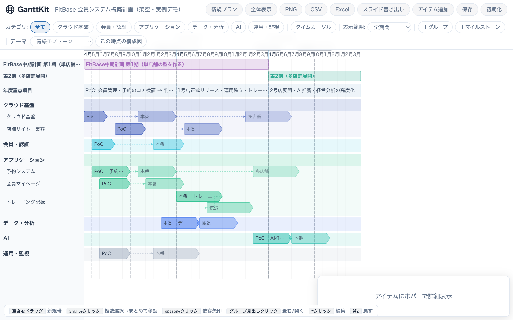
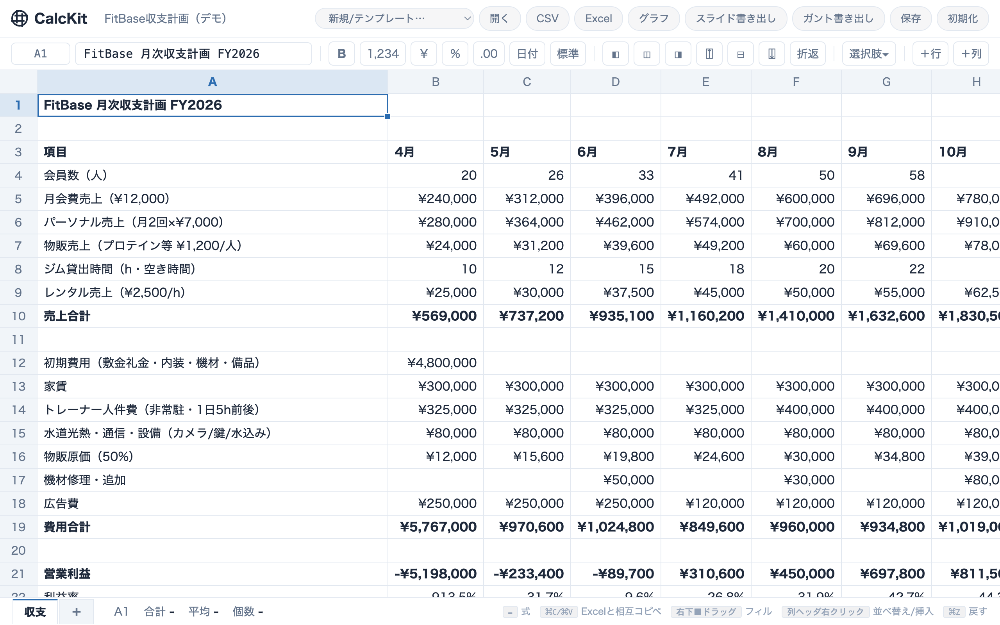
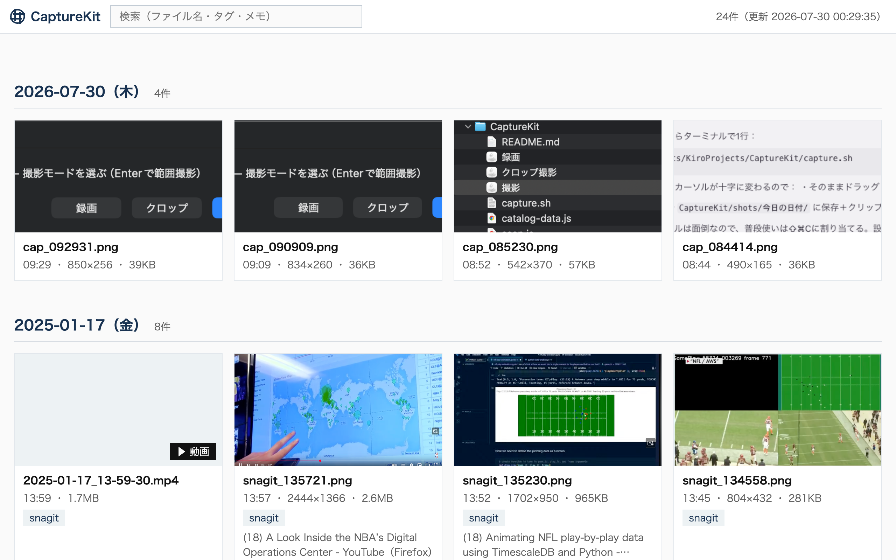
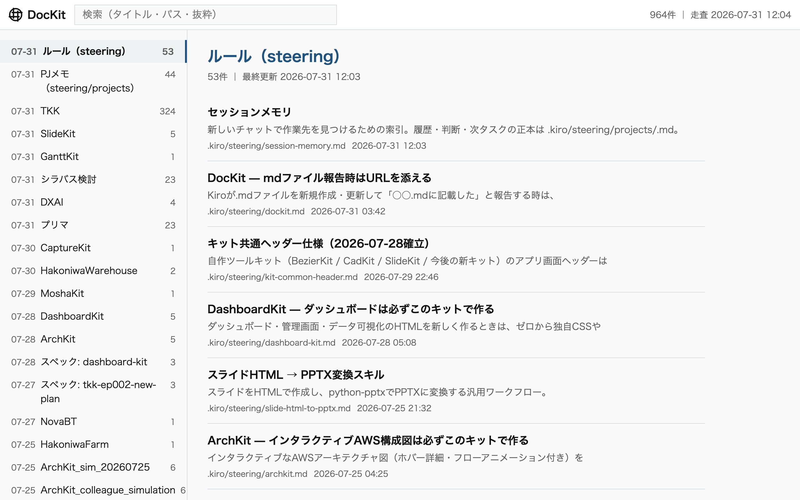

ダブルクリックで起動する、
自分の道具箱。
スライド、ダッシュボード、AWS構成図、表計算、ガント、ベジェ描画、3D CAD、スクショ整理。仕事で毎回作っていたものを、HTML1ファイルのキットに削り出した。ビルドなし、サーバーなし、サブスクなし。file://で開けばそのまま動く。
一覧ALL KITS
| キット | ひとこと | 入口 |
|---|---|---|
| SlideKit | スライドをHTMLで作りPPTXに変換。ブラウザ上で直接編集（移動・色・表・画像⌘V） | パターン集 |
| DashboardKit | ダッシュボード部品キット。KPI・グラフ・テーブル・テーマ6種 | 実例 配色 |
| ArchitectureKit | ホバー詳細＋フローアニメ付きのAWS構成図。データ差し替えで量産 | 題材の説明 |
| CadKit | ブラウザ3D CAD。スケッチ拘束→押し出し・回転・有機ボディ | |
| BezierKit | イラレ風ベジェ描画。画像トレース・筆線・可変線幅・うねり効果 | アイコン集 |
| GanttKit | 触れるガントチャート。タイムカーソルで「その日の断面」を見る | |
| CalcKit | エクセル相当の表計算。式・関数・複数シート。表をスライドやガントに書き出す | 仕様 |
| CaptureKit | Snagit代替。OS標準撮影＋日付カタログ＋検索。独自形式に縛られない | |
| DocKit | ワークスペース中の.mdを1つのビューアで。直リンクで共有 |
リンクは全部このファイルからの相対パス。このページ自体もHTML1枚で、ワークスペースごと持っていけばそのまま動く。
つくる — 資料・可視化SLIDES / DASHBOARDS / DIAGRAMS
お客さん・チームに見せるものを作るキット群。共通の考え方は「正本はHTML、成果物は変換で出す」。ブラウザで確認しながら作り、確定したらPPTXやPNGに落とす。
01SlideKit

スライドをHTMLで書き、python-pptxでPPTXに変換する。全要素が絶対座標のdata属性を持ち、変換後もPowerPointで文字・色を編集できる。ブラウザ側では✏️モードで移動・色・太字・箇条書き・ページ複製まで直接編集でき、編集結果は「変更をコピー」でKiroに貼り戻す。
- 雛形コピー→中身差し替えが標準。独自CSSを書かない（PPTX互換が保証される範囲だけ使う）
- PowerPointネイティブ箇条書き（Enterでマーカー継続・Tabでレベル送り）
- スクショ用プレースホルダーに⌘Vで画像差し込み。アス比自動フィット
- プレゼン中のポストイットメモ、パターン・図解カタログ同梱
- 図解相談: 「案だけコピー」「書き換え依頼をコピー」でKiroへの依頼文を生成する。外部APIへは送らず、クリップボードに置くだけ
- ページ追加メニューから「＋ガント」「＋表(CalcKit)」。別タブでGanttKit／CalcKitが開き、作った表やガントがデッキに1枚入る
雛形パターン集図解カタログ検証: python3 SlideKit/run_check.py 対象.html
02DashboardKit

ダッシュボードを毎回ゼロから書かないための部品キット。空divにmountする方式で、KPIカード・グラフ・アラート・テーブル・期間切替・配色パネルが揃う。データはページ側の純関数で整形して渡す（キットは集計しない）。
- 実カレンダー間隔の時間軸、週末帯、目標破線、予測は破線、日付クリック連携
- テーマ6種（seiryoku／pastel／corporate／dark／newspaper／awspurple）。色はCSSカスタムプロパティ経由で、ページ側に色を書かない
- 配色パネルでhex直接編集→CSV保存で共有。本体はテスト431件で保護
部品カタログ実例（ジム会員ダッシュボード）配色マップ検証: cd DashboardKit && npm test
03ArchitectureKit

ホバーで役割説明、クリックでデータフローがアニメーションするAWS構成図。エンジンとデータを分離してあり、データファイル1本の差し替えで新しい図が作れる。全ノードに「このシステムでの役割」と試験ポイント（SAA/DEA）を書く規約。
- 実例は架空パーソナルジムFitBase（25サービス・9フロー）。DashboardKitの実例と世界観を共有
- レイアウトは左=入力・中央=AWS・右=出力で固定。スライドにはPNG書き出しで貼る
実例（FitBase構成図）FitBaseとは白紙デモ検証: node ArchKit/archkit-check.js データ.js
04GanttKit

canvas製の触れるガントチャート。看板機能はタイムカーソルで、カーソルを任意の日付へドラッグすると「その日に何が動いているか」の断面が見える。ArchitectureKitと連動させると、構成図がその時点の状態で色付く。既存版のタイムラインエンジンをキット化した。
- 帯の端点をドラッグして日付を直接動かす。依存矢印は帯の先端から出る。ズームは週/日
- 「表(CalcKit)で開く」でガント⇄表を往復できる。表で一気に入力→ガントでドラッグ調整→表に戻して集計
- スライドへ1枚として書き出し。Undo/Redoあり
起動検証: python3 GanttKit/check.py
05CalcKit

エクセルの代わりに使う表計算。式エンジンは自前パーサで、evalを使わない。セル参照・絶対参照・比較・連結に加えてSUM／IF／VLOOKUP／ROUND／DATEなど20関数。正本は.calc.jsonなので、保存ファイルをそのままKiroに渡して「この表を◯◯にして」で続きを頼める。
- フィルハンドル（式は相対シフト・連番・日付は+1日）、日付型はExcel互換シリアル値、列ヘッダ右クリックで並べ替え（行内の式が移動に追従）
- 複数シートのタブ。シート間参照は
=収支!N21で、シート名を変えると式が自動で追従する - Excelと⌘C/⌘VでTSV往復。行列の挿入・削除で参照が追従、切れたら#REF!
- 書き出しはSlideKitのスライド（表はPPTXで編集可能・グラフはDashboardKitのSVG）／GanttKitのガント／CSV／.xls
起動仕様検証: python3 CalcKit/check.py（式・書き出し30項目＋SlideKit往復E2E）
えがく — 描画・造形DRAWING / MODELING
イラレとFusionをやめられるか、を試している系統。まだ全部は置き換わらないが、日常の8割はこちらで済むようになってきた。
06BezierKit

ブラウザ製のベジェ描画ツール。ペン・アンカー編集・パス演算・文字のアウトライン化・レイヤーというイラレの基本に加えて、画像トレース（Schneider法の曲線フィット付き）と書道系の線表現を持つ。
- 線のアピアランス: 線端（丸/切り/突出）・角（丸/尖り/面取り）・うねり（波線/ギザギザ）・破線・可変線幅・筆/抜き/掠れ。全部非破壊
- 画像をドロップ→色数を選んでアウトライン化。色ごとにレイヤー分割、穴も抜ける
- 幅ツール・シェイプビルダー・スムーズ・単純化・クリッピングマスク・ロックを基準に整列（FreeHand流）
- アイコンカタログ121個同梱。カタログ⇄本体を往復して図案を編集できる
- 実物からのアイコン化を自動化した。ロゴや写真を渡すと、マスク→トレース→96×96正規化→カタログ反映→仕上がりの自動目視まで1コマンドで通る
起動アイコンカタログ検証: python3 BezierKit/cdp-check.py（17項目）／python3 BezierKit/icon-check.py
07CadKit

ブラウザで動く3D CAD。スケッチに拘束（水平・垂直・平行・直角・等長・一致）を付けて、押し出し・回転などのフィーチャーで形にする履歴ベースの流儀。背骨＋断面キーで作る有機ボディにも対応し、ゼブラ表示で面の張りを確認できる。
- 平安京の歴史建築13点を収録（羅城門・朝堂院・豊楽院・内裏・大内裏・東寺・西寺・寝殿造5種・町家・掘立小屋）。内裏は内裏図と再現図に合わせて外郭築地・15門・殿舎29棟まで起こした
- 作りながら確かめる仕組み: 資料をWikipediaから調べて保存、モデルの寸法をJSONで数値検証、仕上がりをスクリーンショットで自動目視。検証→書き出しは1コマンド
起動検証: 画面内 #test で回帰一式／python3 CadKit/shot-check.py
まわす — 日々の運用DAILY OPERATIONS
派手さはないが毎日触るもの。ファイルがどこにあるか・何だったかを思い出す時間を削る。
08CaptureKit

Snagitの独自形式が使いにくい問題への回答。撮影はmacOS標準のscreencaptureに任せ（常にPNG/MOV）、キットは保存・日付カタログ・検索を担う。撮った画像はクリップボードにも入るので、SlideKitのプレースホルダーへ⌘V直行できる。
- CaptureKit.appをダブルクリック→撮影/クロップ/録画。範囲選択中スペースでウインドウ認識
- カタログはfile://のビューアで日付順・検索・タグ。Snagit資産の取り込みスクリプトも準備済み
09DocKit

ワークスペースに散らばる.mdを1つのビューアで読む。#p=パスの直リンクが作れるので、「あのメモどこ」がリンク1本で済む。カタログは読み取り専用、正本は常に.md側。
- プロジェクト別一覧・全文検索・関連文書の自動検出。選択した箇所をKiroへの依頼文としてコピーできる
- Kiroのルール（steering）とスキルの専用カタログ付き。参照切れのリンクと、常時読み込みの膨張を検知する
ビューアルール・スキル一覧検証: python3 DocKit/check.py
流儀HOUSE RULES
- file://で動く。ビルドシステムなし、バンドラーなし、サーバーなし。ダブルクリックが唯一のデプロイ
- エンジンとデータを分ける。ArchitectureKit・DashboardKit・GanttKitはデータファイル差し替えで量産する。ロジックをデータ側に書かない
- 変更したら回帰テスト。各キットにチェッカーがあり、機能追加のたびにテストも足す。壊れたまま進めない
- 見た目は共通ヘッダーで揃える。丸に井桁マーク＋キット名の48pxヘッダー。配色は各キットの文化を残す（雰囲気は揃える、完全には揃えない）
- キット同士がつながる。CalcKitの表→SlideKitに1枚として／GanttKitのガントへ。ガント→CalcKitに戻して集計。グラフはDashboardKitが描く。CaptureKitのスクショ→SlideKitに⌘V。BezierKitのアイコン→各キットのUIへ。FitBaseという架空ジムをArchitectureKitとDashboardKitの実例で共有
- 正本は常にプレーンなファイル。HTML・md・JSON・JSのどれかで、独自バイナリ形式を作らない。10年後も開ける
- 書くのはAI、直すのは人。どのキットもLLMを内蔵していない。代わりに、正本をKiroが読み書きできるテキストにして、規約で書き方を縛り、出来を機械が確認する（各キットのチェッカー・スクリーンショットの自動目視）。AIへの依頼はクリップボード経由で、外部へは何も送らない